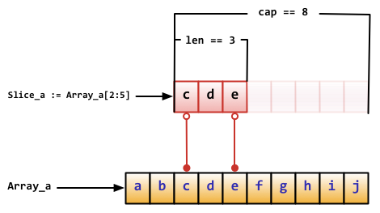

数据类型
内置类型
| name | dart | go | js | python |
|---|---|---|---|---|
| numbers | num | Number | Numbers | |
| numbers | int | int | -int | |
| numbers | int8 | |||
| numbers | int16 | |||
| numbers | int32/rune | |||
| numbers | int64 | |||
| numbers | uint | |||
| numbers | uint8/byte | |||
| numbers | uint16 | |||
| numbers | uint32 | |||
| numbers | uint64 | |||
| numbers | uintptr | |||
| numbers | double | float32 | -float | |
| numbers | float64 | |||
| numbers | complex64 | |||
| numbers | complex128 | |||
| complex | complex | |||
| strings | String | string | String | str |
| booleans | bool(true/false) | bool | Boolean(true/false) | bool(True/False) |
| lists/arrays | List | -Array | list | |
| maps | map | -Map | dict | |
| runes | runes | |||
| symbols | symbol | Symbol | ||
| Null | -null | Null(null) | ||
| Undefined | Undefined(undefined) | |||
| Object | Object | Object | ||
| Set | Set | -Set | set | |
| ArrayBuffer | -ArrayBuffer | bytearray | ||
| Tuples | tuple | |||
| range | range | |||
| Function | -Function | |||
| dynamic | dynamic |
go
int, uint 和 uintptr 在 32 位系统上通常为 32 位宽，在 64 位系统上则为 64 位宽。 当你需要一个整数值时应使用 int 类型，除非你有特殊的理由使用固定大小或无符号的整数类型。
默认类型
dart
go
// 在声明一个变量而不指定其类型时（即使用不带类型的 := 语法或 var = 表达式语法），
// 变量的类型由右值推导得出。
var i int
j := i // j 也是一个 int
// 不过当右边包含未指明类型的数值常量时，
// 新变量的类型就可能是 int, float64 或 complex128 了，
// 这取决于常量的精度：
i := 42 // int
f := 3.142 // float64
g := 0.867 + 0.5i // complex128js
类型判断
dart
// as 类型转换
// is 如果对象是指定的类型返回 True
// is! 如果对象是指定的类型返回 False
if (emp is Person) { // Type check
emp.firstName = 'Bob';
}
// 使用 as 操作符可以简化上面的代码：
(emp as Person).firstName = 'Bob';
// 可以使用 Object 的 runtimeType 属性来判断实例 的类型，
// 该属性 返回一个 Type 对象。
var msg = 'false';
print('The type of a is ${msg.runtimeType}');
// 其他方式
import 'dart:mirrors';
getTypeName(dynamic obj) {
return reflect(obj).type.reflectedType.toString();
}go
var t interface{}
t = functionOfSomeType()
switch t := t.(type) {
default:
fmt.Printf("unexpected type %T", t) // %T 输出 t 是什么类型
case bool:
fmt.Printf("boolean %t\n", t) // t 是 bool 类型
case int:
fmt.Printf("integer %d\n", t) // t 是 int 类型
case *bool:
fmt.Printf("pointer to boolean %t\n", *t) // t 是 *bool 类型
case *int:
fmt.Printf("pointer to integer %d\n", *t) // t 是 *int 类型
}js
typeof undefined; // undefined
typeof []; // object
typeof '123'; // string
typeof null; // object
// instanceof运算符返回一个布尔值，表示对象是否为某个构造函数的实例。
const s = new String('123');
s instanceof String; // true
s instanceof Object; // true
v instanceof Vehicle
// 等同于
Vehicle.prototype.isPrototypeOf(v)
Object.prototype.toString.call(2) // "[object Number]"
Object.prototype.toString.call('') // "[object String]"
Object.prototype.toString.call(true) // "[object Boolean]"
Object.prototype.toString.call(undefined) // "[object Undefined]"
Object.prototype.toString.call(null) // "[object Null]"
Object.prototype.toString.call(Math) // "[object Math]"
Object.prototype.toString.call({}) // "[object Object]"
Object.prototype.toString.call([]) // "[object Array]"
var type = function (o){
var s = Object.prototype.toString.call(o);
return s.match(/\[object (.*?)\]/)[1].toLowerCase();
};
type({}); // "object"
type([]); // "array"
type(5); // "number"
type(null); // "null"
type(); // "undefined"
type(/abcd/); // "regex"
type(new Date()); // "date"
['Null',
'Undefined',
'Object',
'Array',
'String',
'Number',
'Boolean',
'Function',
'RegExp'
].forEach(function (t) {
type['is' + t] = function (o) {
return type(o) === t.toLowerCase();
};
});
type.isObject({}) // true
type.isNumber(NaN) // true
type.isRegExp(/abc/) // true
function type (obj) {
return Reflect.apply(Object.prototype.toString, obj, []).replace(/^\[object\s(\w+)\]$/, '$1').toLowerCase()
}
type(new String('123')) // stringpython
import types
type(myInt) is types.IntType
type(myInt) is type(1)
isinstance(myInt, int)检查两个引用是否指向同一个对象
检查两个引用是否指向同一个对象(内存地址)
dart
bool identical(Object a, Object b)go
js
ES5 比较两个值是否相等，只有两个运算符：相等运算符（==）和严格相等运算符（===）。 它们都有缺点，前者会自动转换数据类型，后者的NaN不等于自身，以及+0等于-0。
Object.is('foo', 'foo')
// true
Object.is({}, {})
// falsepython
基本类型
数值
数值操作
dart
assert(int.parse('42') == 42);
assert(int.parse('0x42') == 66);
assert(double.parse('0.50') == 0.5);
assert(num.parse('42') is int);
assert(num.parse('0x42') is int);
assert(num.parse('0.50') is double);
assert(int.parse('42', radix: 16) == 66);
// Convert an int to a string.
assert(42.toString() == '42');
// Convert a double to a string.
assert(123.456.toString() == '123.456');
// Specify the number of digits after the decimal.
assert(123.456.toStringAsFixed(2) == '123.46');
// Specify the number of significant figures.
assert(123.456.toStringAsPrecision(2) == '1.2e+2');
assert(double.parse('1.2e+2') == 120.0);go
js
parseInt('v8',32) // 1000
const string1 = '1'
const number1 = parseInt(string1)
// 3
console.log(number1 + 2)python
string_1 = "1"
number_1 = int(string_1)
# 3
print(number_1 + 2)计算最大值和最小值
dart
assert(math.max(1, 1000) == 1000);
assert(math.min(1, -1000) == -1000);go
js
const a = [10,5,11,7,8,9];
Math.max(...a) - Math.min(...a)python
# 100
print(max(100, 50))
# 40
print(min(80, 40))数学常量
dart
import 'dart:math' as math;
print(math.E); // 2.718281828459045
print(math.PI); // 3.141592653589793
print(math.SQRT2); // 1.4142135623730951go
js
Math.E // 2.718281828459045
Math.LN2 // 0.6931471805599453
Math.LN10 // 2.302585092994046
Math.LOG2E // 1.4426950408889634
Math.LOG10E // 0.4342944819032518
Math.PI // 3.141592653589793
Math.SQRT1_2 // 0.7071067811865476
Math.SQRT2 // 1.4142135623730951python
随机数
dart
import 'dart:math' as math;
var random = new math.Random();
random.nextDouble(); // Between 0.0 and 1.0: [0, 1)
random.nextInt(10); // Between 0 and 9.
var random = new math.Random();
random.nextBool(); // true or falsego
js
// Math.random()返回0到1之间的一个伪随机数，可能等于0，但是一定小于1。
Math.random() // 0.7151307314634323
// 任意范围的随机数生成函数
function getRandomArbitrary(min, max) {
return Math.random() * (max - min) + min;
}
getRandomArbitrary(1.5, 6.5)
// 2.4942810038223864
// 任意范围的随机整数生成函数
function getRandomInt(min, max) {
return Math.floor(Math.random() * (max - min + 1)) + min;
}
getRandomInt(1, 6) // 5
// 返回随机字符的例子
function random_str(length) {
var ALPHABET = 'ABCDEFGHIJKLMNOPQRSTUVWXYZ';
ALPHABET += 'abcdefghijklmnopqrstuvwxyz';
ALPHABET += '0123456789-_';
var str = '';
for (var i=0; i < length; ++i) {
var rand = Math.floor(Math.random() * ALPHABET.length);
str += ALPHABET.substring(rand, rand + 1);
}
return str;
}
random_str(6) // "NdQKOr"
// 返回随机字符另一个实现
const str = 'abcdefghijklmnopqrstuvwxyz9876543210';
const l = 6;
// [...Array(l)].map(()=>str.charAt(Math.floor(Math.random() * str.length))).join('');
[...Array(l)].map(()=>str[~~(Math.random() * str.length)]).join('');python
>>> import random
>>> random.choice(['apple', 'pear', 'banana'])
'apple'
>>> random.sample(range(100), 10) # sampling without replacement
[30, 83, 16, 4, 8, 81, 41, 50, 18, 33]
>>> random.random() # random float
0.17970987693706186
>>> random.randrange(6) # random integer chosen from range(6)
4
# statistics 模块计算数值数据的基本统计属性（均值，中位数，方差等）:
>>> import statistics
>>> data = [2.75, 1.75, 1.25, 0.25, 0.5, 1.25, 3.5]
>>> statistics.mean(data)
1.6071428571428572
>>> statistics.median(data)
1.25
>>> statistics.variance(data)
1.3720238095238095生成随机整数
dart
import 'dart:math' as math;
var random = new math.Random();
random.nextInt(10); // Between 0 and 9.go
js
// 任意范围的随机整数生成函数
function getRandomInt(min, max) {
return Math.floor(Math.random() * (max - min + 1)) + min;
}
getRandomInt(1, 6) // 5python
>>> import random
>>> random.randrange(6) # random integer chosen from range(6)
4生成随机布尔值
dart
import 'dart:math' as math;
var random = new math.Random();
random.nextBool(); // true or falsego
js
python
生成随机字符串
dart
go
js
// 返回随机字符的例子
function random_str(length) {
var ALPHABET = 'ABCDEFGHIJKLMNOPQRSTUVWXYZ';
ALPHABET += 'abcdefghijklmnopqrstuvwxyz';
ALPHABET += '0123456789-_';
var str = '';
for (var i=0; i < length; ++i) {
var rand = Math.floor(Math.random() * ALPHABET.length);
str += ALPHABET.substring(rand, rand + 1);
}
return str;
}
random_str(6) // "NdQKOr"
// 返回随机字符另一个实现
const str = 'abcdefghijklmnopqrstuvwxyz9876543210';
const l = 6;
// [...Array(l)].map(()=>str.charAt(Math.floor(Math.random() * str.length))).join('');
[...Array(l)].map(()=>str[~~(Math.random() * str.length)]).join('');python
随机选择子对象
dart
go
js
python
>>> import random
>>> random.choice(['apple', 'pear', 'banana'])
'apple'三角函数
dart
import 'dart:math' as math;
// Cosine
assert(math.cos(math.PI) == -1.0);
// Sine
var degrees = 30;
var radians = degrees * (math.PI / 180);
// radians is now 0.52359.
var sinOf30degrees = math.sin(radians);
// sin 30° = 0.5
assert((sinOf30degrees - 0.5).abs() < 0.01);go
js
Math.sin(0) // 0
Math.cos(0) // 1
Math.tan(0) // 0
Math.sin(Math.PI / 2) // 1
Math.asin(1) // 1.5707963267948966
Math.acos(1) // 0
Math.atan(1) // 0.7853981633974483python
十进制浮点运算
dart
go
js
// 小数点截取
(10).toFixed(2) // "10.00"
10.005.toFixed(2) // "10.01"
// 2
console.log(Math.ceil(1.5))
// 1
console.log(Math.floor(1.5))
// 2
console.log(Math.round(1.5))python
import math
# 2
print(math.ceil(1.5))
# 1
print(math.floor(1.5))
# 2
print(round(1.5))进制转换
dart
go
js
// 10进制转为32进制
(1000).toString(32) // 'v8'
// 32进制转为10进制
parseInt('v8',32) // 1000python
字符串
dart
Dart 字符串是 UTF-16 编码的字符序列。 可以使用单引号或者双引号来创建字符串：
var s1 = 'Single quotes work well for string literals.';
var s2 = "Double quotes work just as well.";
var s3 = 'It\'s easy to escape the string delimiter.';
var s4 = "It's even easier to use the other delimiter.";go
Go中的字符串都是采用UTF-8字符集编码。 字符串是用一对双引号（""）或反引号（`` ）括起来定义
var frenchHello string // 声明变量为字符串的一般方法
var emptyString string = "" // 声明了一个字符串变量，初始化为空字符串
func test() {
no, yes, maybe := "no", "yes", "maybe" // 简短声明，同时声明多个变量
japaneseHello := "Konichiwa" // 同上
frenchHello = "Bonjour" // 常规赋值
}
// Go中字符串是不可变的
var s string = "hello"
s[0] = 'c' // 出错！！！！
s := "hello"
c := []byte(s) // 将字符串 s 转换为 []byte 类型
c[0] = 'c'
s2 := string(c) // 再转换回 string 类型
fmt.Printf("%s\n", s2)js
const someString = 'abcd'
// 4
console.log(someString.length)python
some_string = "abcd"
# 4
print(len(some_string))
'spam eggs' # single quotes
'doesn\'t' # use \' to escape the single quote...
"doesn't" # ...or use double quotes instead
'"Yes," they said.'
"\"Yes,\" they said."
'"Isn\'t," they said.'
print('C:\some\name') # here \n means newline!
print(r'C:\some\name') # note the r before the quote
# 字符串可以用 + 进行连接（粘到一起），也可以用 * 进行重复:
# 3 times 'un', followed by 'ium'
3 * 'un' + 'ium'
# 相邻的两个或多个 字符串字面值 （引号引起来的字符）将会自动连接到一起.
'Py' 'thon'# 字符串是可以被 索引 （下标访问）的，第一个字符索引是 0。
>>> word = 'Python'
>>> word[0] # character in position 0
'P'
>>> word[5] # character in position 5
'n'
# 索引也可以用负数，这种会从右边开始数:
>>> word[-1] # last character
'n'
>>> word[-2] # second-last character
'o'
>>> word[-6]
'P'
# 除了索引，字符串还支持 切片。
>>> word[0:2] # characters from position 0 (included) to 2 (excluded)
'Py'
>>> word[2:5] # characters from position 2 (included) to 5 (excluded)
'tho'
>>> word[:2] + word[2:]
'Python'
>>> word[:4] + word[4:]
'Python'多行字符串
dart
使用三个单引号或者双引号也可以 创建多行字符串对象：
var s1 = '''
You can create
multi-line strings like this one.
''';
var s2 = """This is also a
multi-line string.""";go
`` 括起的字符串为Raw字符串，即字符串在代码中的形式就是打印时的形式， 它没有字符转义，换行也将原样输出
m := `hello
world`js
const x = `------
Line 1
Line 2
Line 3
------`python
x = """------
Line 1
Line 2
Line 3
------"""
print("""\
Usage: thingy [OPTIONS]
-h Display this usage message
-H hostname Hostname to connect to
""")
text = ('Put several strings within parentheses '
'to have them joined together.')字符串前缀
原始字符串
dart
var s = r"In a raw string, even \n isn't special.";go
js
python
print(r'C:\some\name') # note the r before the quote字符串搜索
dart
// Check whether a string contains another string.
assert('Never odd or even'.contains('odd'));
// Does a string start with another string?
assert('Never odd or even'.startsWith('Never'));
// Does a string end with another string?
assert('Never odd or even'.endsWith('even'));
// Find the location of a string inside a string.
assert('Never odd or even'.indexOf('odd') == 6);go
js
let s = 'Hello world!';
s.startsWith('Hello') // true
s.endsWith('!') // true
s.includes('o') // true
let s = 'Hello world!';
s.startsWith('world', 6) // true
s.endsWith('Hello', 5) // true
s.includes('Hello', 6) // false
'hello world'.indexOf('o') // 4
'JavaScript'.indexOf('script') // -1
'hello world'.indexOf('o', 6) // 7
'hello world'.lastIndexOf('o') // 7
'hello world'.lastIndexOf('o', 6) // 4
'cat, bat, sat, fat'.search('at') // 1
// replace方法用于替换匹配的子字符串，一般情况下只替换第一个匹配（除非使用带有g修饰符的正则表达式）。
'aaa'.replace('a', 'b') // "baa"
// 2 is in the string
if ('123'.includes('2')) {
console.log('2 is in the string')
}
// 2 is not in the string
if (!'456'.includes('2')) {
console.log('2 is not in the string')
}
// Has a number
if ('iphone 8'.match(/\d/g)) {
console.log('Has a number')
}
// Doesn't have a number
if (!'iphone x'.match(/\d/g)) {
console.log("Doesn't have a number")
}python
# 2 is in the string
if "2" in "123":
print("2 is in the string")
# 2 is not in the string
if "2" not in "456":
print("2 is not in the string")
import re
# Has a number
if re.search(r"\d", "iphone 8"):
print("Has a number")
# Doesn't have a number
if not re.search(r"\d", "iphone x"):
print("Doesn't have a number")字符串截取
dart
// Grab a substring.
assert('Never odd or even'.substring(6, 9) == 'odd');
// Split a string using a string pattern.
var parts = 'structured web apps'.split(' ');
assert(parts.length == 3);
assert(parts[0] == 'structured');
// Get a UTF-16 code unit (as a string) by index.
assert('Never odd or even'[0] == 'N');
// Use split() with an empty string parameter to get
// a list of all characters (as Strings); good for
// iterating.
for (var char in 'hello'.split('')) {
print(char);
}
// Get all the UTF-16 code units in the string.
var codeUnitList = 'Never odd or even'.codeUnits.toList();
assert(codeUnitList[0] == 78);go
js
'a|b|c'.split('|') // ["a", "b", "c"]
'a||c'.split('|') // ['a', '', 'c']
// slice方法用于从原字符串取出子字符串并返回，不改变原字符串。
// 它的第一个参数是子字符串的开始位置，第二个参数是子字符串的结束位置（不含该位置）。
// substring方法跟slice方法很相像
// 不建议使用substring方法，应该优先使用slice
'JavaScript'.slice(0, 4) // "Java"
'JavaScript'.slice(-6) // "Script"
'JavaScript'.slice(0, -6) // "Java"
'JavaScript'.slice(-2, -1) // "p"
// substr方法的第一个参数是子字符串的开始位置（从0开始计算），第二个参数是子字符串的长度。
// 如果省略第二个参数，则表示子字符串一直到原字符串的结束。
// 如果第一个参数是负数，表示倒数计算的字符位置。
// 如果第二个参数是负数，将被自动转为0，因此会返回空字符串。
'JavaScript'.substr(4, 6) // "Script"
'JavaScript'.substr(-6) // "Script"
'JavaScript'.substr(4, -1) // ""
const someString = '0123456'
// 234
console.log(someString.substring(2, 5))
const someString = 'a,b,c'
const someStringSplit = someString.split(',')
// a
console.log(someStringSplit[0])
// b
console.log(someStringSplit[1])
// c
console.log(someStringSplit[2])python
some_string = "0123456"
# 234
print(some_string[2:5])
some_string = "a,b,c"
some_string_split = some_string.split(",")
# a
print(some_string_split[0])
# b
print(some_string_split[1])
# c
print(some_string_split[2])大小写转换
dart
// Convert to uppercase.
assert('structured web apps'.toUpperCase() == 'STRUCTURED WEB APPS');
// Convert to lowercase.
assert('STRUCTURED WEB APPS'.toLowerCase() == 'structured web apps');go
js
'Hello World'.toLowerCase()
// "hello world"
'Hello World'.toUpperCase()
// "HELLO WORLD"python
# 返回原字符串的副本，其中大写字符转换为小写，小写转为大写
# 请注意 s.swapcase().swapcase() == s 并不一定为真值。
str.swapcase()
# 返回原字符串的副本，其中所有区分大小写的字符 [4] 均转换为大写
str.upper()
# 返回原字符串的副本，其所有区分大小写的字符 [4] 均转换为小写
str.lower()裁剪和判断空字符串
dart
// Trim a string.
assert(' hello '.trim() == 'hello');
// Check whether a string is empty.
assert(''.isEmpty);
// Strings with only white space are not empty.
assert(!' '.isEmpty);go
js
' hello world '.trim()
// "hello world"
const s = ' abc ';
s.trim() // "abc"
s.trimStart() // "abc "
s.trimEnd() // " abc"python
some_string = " abc "
# abc
print(some_string.strip())替换部分字符
dart
var greetingTemplate = 'Hello, NAME!';
var greeting = greetingTemplate
.replaceAll(new RegExp('NAME'), 'Bob');
assert(greeting !=
greetingTemplate); // greetingTemplate didn't change.go
js
// replace方法用于替换匹配的子字符串，一般情况下只替换第一个匹配（除非使用带有g修饰符的正则表达式）。
'aaa'.replace('a', 'b') // "baa"
const someString = 'a b c d e'
// Only changes the first space
// a,b c d e
// console.log(someString.replace(' ', ','))
// Use / /g instead of ' ' to change every space
console.log(someString.replace(/ /g, ','))python
some_string = "a b c d e"
# a,b,c,d,e
print(some_string.replace(" ", ","))格式化输出
dart
go
js
const x = 'Hello'
// Hello World
console.log(`${x} World`)python
x = "Hello"
# Hello World
print(f"{x} World")>>> year = 2016
>>> event = 'Referendum'
>>> f'Results of the {year} {event}'
'Results of the 2016 Referendum'
>>> yes_votes = 42_572_654
>>> no_votes = 43_132_495
>>> percentage = yes_votes / (yes_votes + no_votes)
>>> '{:-9} YES votes {:2.2%}'.format(yes_votes, percentage)
' 42572654 YES votes 49.67%'
# 当你不需要花哨的输出而只是想快速显示某些变量以进行调试时，
# 可以使用 repr() or str() 函数将任何值转化为字符串。
>>> s = 'Hello, world.'
>>> str(s)
'Hello, world.'
>>> repr(s)
"'Hello, world.'"
>>> str(1/7)
'0.14285714285714285'
>>> x = 10 * 3.25
>>> y = 200 * 200
>>> s = 'The value of x is ' + repr(x) + ', and y is ' + repr(y) + '...'
>>> print(s)
The value of x is 32.5, and y is 40000...
>>> # The repr() of a string adds string quotes and backslashes:
... hello = 'hello, world\n'
>>> hellos = repr(hello)
>>> print(hellos)
'hello, world\n'
>>> # The argument to repr() may be any Python object:
... repr((x, y, ('spam', 'eggs')))
"(32.5, 40000, ('spam', 'eggs'))"
# 将pi舍入到小数点后三位:
>>> import math
>>> print(f'The value of pi is approximately {math.pi:.3f}.')
The value of pi is approximately 3.142.
# 在 ':' 后传递一个整数可以让该字段成为最小字符宽度。这在使列对齐时很有用。
>>> table = {'Sjoerd': 4127, 'Jack': 4098, 'Dcab': 7678}
>>> for name, phone in table.items():
... print(f'{name:10} ==> {phone:10d}')
...
Sjoerd ==> 4127
Jack ==> 4098
Dcab ==> 7678
# 其他的修饰符可用于在格式化之前转化值。
# '!a' 应用 ascii() ，'!s' 应用 str()，还有 '!r' 应用 repr():
>>> animals = 'eels'
>>> print(f'My hovercraft is full of {animals}.')
My hovercraft is full of eels.
>>> print(f'My hovercraft is full of {animals!r}.')
My hovercraft is full of 'eels'.
# 字符串的 format() 方法
>>> print('We are the {} who say "{}!"'.format('knights', 'Ni'))
We are the knights who say "Ni!"
>>> print('{0} and {1}'.format('spam', 'eggs'))
spam and eggs
>>> print('{1} and {0}'.format('spam', 'eggs'))
eggs and spam
>>> print('This {food} is {adjective}.'.format(
... food='spam', adjective='absolutely horrible'))
This spam is absolutely horrible.
>>> print('The story of {0}, {1}, and {other}.'.format('Bill', 'Manfred',
other='Georg'))
The story of Bill, Manfred, and Georg.
>>> for x in range(1, 11):
... print('{0:2d} {1:3d} {2:4d}'.format(x, x*x, x*x*x))
...
1 1 1
2 4 8
3 9 27
4 16 64
5 25 125
6 36 216
7 49 343
8 64 512
9 81 729
10 100 1000
# str.zfill() ，它会在数字字符串的左边填充零。它能识别正负号:
>>> '12'.zfill(5)
'00012'
>>> '-3.14'.zfill(7)
'-003.14'
>>> '3.14159265359'.zfill(5)
'3.14159265359'
# 旧的字符串格式化方法
>>> import math
>>> print('The value of pi is approximately %5.3f.' % math.pi)
The value of pi is approximately 3.142.
>>> import reprlib
>>> reprlib.repr(set('supercalifragilisticexpialidocious'))
"{'a', 'c', 'd', 'e', 'f', 'g', ...}"
>>> import pprint
>>> t = [[[['black', 'cyan'], 'white', ['green', 'red']], [['magenta',
... 'yellow'], 'blue']]]
...
>>> pprint.pprint(t, width=30)
[[[['black', 'cyan'],
'white',
['green', 'red']],
[['magenta', 'yellow'],
'blue']]]
>>> import textwrap
>>> doc = """The wrap() method is just like fill() except that it returns
... a list of strings instead of one big string with newlines to separate
... the wrapped lines."""
...
>>> print(textwrap.fill(doc, width=40))
The wrap() method is just like fill()
except that it returns a list of strings
instead of one big string with newlines
to separate the wrapped lines.Symbols
dart
mirror 系统使用 Symbol 类对象 来表达定义的 Dart 标识符名字。 Symbols 在混淆后的代码也可以 使用。
如果在写代码的时候，已经知道 symbol 的名字了，则可以使用 #符号名字 的方式直接使用。 直接使用的 symbol 对象是编译时常量，多次定义引用的是同一个对象。 如果名字不知道，则可以通过 Symbol 构造函数来 创建
import 'dart:mirrors';
// If the symbol name is known at compile time.
const className = #MyClass;
// If the symbol name is dynamically determined.
var userInput = askUserForNameOfFunction();
var functionName = new Symbol(userInput);
// 要获取原来的 symbol 名字，使用 MirrorSystem.getName() 函数。
import 'dart:mirrors';
const className = #MyClass;
assert('MyClass' == MirrorSystem.getName(className));go
js
ES6 引入了一种新的原始数据类型Symbol，表示独一无二的值。 它是 JavaScript 语言的第七种数据类型， 前六种是：undefined、null、布尔值（Boolean）、字符串（String）、数值（Number）、对象（Object）。
除了定义自己使用的 Symbol 值以外，ES6 还提供了 11 个内置的 Symbol 值，指向语言内部使用的方法。
let s = Symbol();
typeof s
// "symbol"
let s1 = Symbol('foo');
let s2 = Symbol('bar');
s1 // Symbol(foo)
s2 // Symbol(bar)
s1.toString() // "Symbol(foo)"
s2.toString() // "Symbol(bar)"
// 没有参数的情况
let s1 = Symbol();
let s2 = Symbol();
s1 === s2 // false
// 有参数的情况
let s1 = Symbol('foo');
let s2 = Symbol('foo');
s1 === s2 // false
const mySymbol = Symbol();
const a = {};
a.mySymbol = 'Hello!';
a[mySymbol] // undefined
a['mySymbol'] // "Hello!"
let s1 = Symbol.for('foo');
let s2 = Symbol.for('foo');
s1 === s2 // truepython
其他基本类型
null
undefined
复杂类型
列表
list/array列表/数组定义及操作
dart
var l = [1, 2, 3];
// 在 list 字面量之前添加 const 关键字，
// 可以 定义一个不变的 list 对象（编译时常量）
var constantList = const [1, 2, 3];
var names = <String>['Seth', 'Kathy', 'Lars'];
// Use a List constructor.
var vegetables = new List();
// Or simply use a list literal.
var fruits = ['apples', 'oranges'];
// Add to a list.
fruits.add('kiwis');
// Add multiple items to a list.
fruits.addAll(['grapes', 'bananas']);
// Get the list length.
assert(fruits.length == 5);
// Remove a single item.
var appleIndex = fruits.indexOf('apples');
fruits.removeAt(appleIndex);
assert(fruits.length == 4);
// Remove all elements from a list.
fruits.clear();
assert(fruits.length == 0);
// 使用 indexOf() 来查找 list 中对象的索引
var fruits = ['apples', 'oranges'];
// Access a list item by index.
assert(fruits[0] == 'apples');
// Find an item in a list.
assert(fruits.indexOf('apples') == 0);
// 排序
var fruits = ['bananas', 'apples', 'oranges'];
// Sort a list.
fruits.sort((a, b) => a.compareTo(b));
assert(fruits[0] == 'apples');
// 可以使用 map().toList() 或者 map().toSet() 来 强制立刻执行 map 的方法：
var loudTeaList = teas
.map((tea) => tea.toUpperCase())
.toList();go
类型 [n]T 表示拥有 n 个 T 类型的值的数组。 数组的长度是其类型的一部分，因此数组不能改变大小。
表达式: var a [10]int， 会将变量 a 声明为拥有 10
个整数的数组。
package main
import "fmt"
func main() {
var a [2]string
a[0] = "Hello"
a[1] = "World"
fmt.Println(a[0], a[1])
fmt.Println(a)
primes := [6]int{2, 3, 5, 7, 11}
fmt.Println(primes)
}
// Hello World
// [Hello World]
// [2 3 5 7 11 0]js
let l = [1, 2, 3];
var arr = [1, 2, 3];
typeof arr // "object"
Array.isArray(arr) // true
var arr = [1, 2, 3];
arr.valueOf() // [1, 2, 3]
var arr = [1, 2, 3];
arr.toString() // "1,2,3"
var arr = [1, 2, 3, [4, 5, 6]];
arr.toString() // "1,2,3,4,5,6"
var arr = [];
arr.push(1, 2);
arr.push(3);
arr.pop();
arr // [1, 2]
var a = ['a', 'b', 'c'];
a.shift() // 'a'
a // ['b', 'c']
var a = ['a', 'b', 'c'];
a.unshift('x'); // 4
a // ['x', 'a', 'b', 'c']
var a = [1, 2, 3, 4];
a.join(' ') // '1 2 3 4'
a.join(' | ') // "1 | 2 | 3 | 4"
a.join() // "1,2,3,4"
['hello'].concat(['world'])
// ["hello", "world"]
['hello'].concat(['world'], ['!'])
// ["hello", "world", "!"]
[1, 2, 3].concat(4, 5, 6)
// [1, 2, 3, 4, 5, 6]
var a = ['a', 'b', 'c'];
a.reverse() // ["c", "b", "a"]
a // ["c", "b", "a"]
// arr.slice(start, end);
var a = ['a', 'b', 'c'];
a.slice(0) // ["a", "b", "c"]
a.slice(1) // ["b", "c"]
a.slice(1, 2) // ["b"]
a.slice(2, 6) // ["c"]
a.slice() // ["a", "b", "c"]
var a = ['a', 'b', 'c'];
a.slice(-2) // ["b", "c"]
a.slice(-2, -1) // ["b"]
var a = ['a', 'b', 'c'];
a.slice(4) // []
a.slice(2, 1) // []
// arr.splice(start, count, addElement1, addElement2, ...);
var a = ['a', 'b', 'c', 'd', 'e', 'f'];
a.splice(4, 2) // ["e", "f"]
a // ["a", "b", "c", "d"]
// sort方法对数组成员进行排序，默认是按照字典顺序排序
// 排序后，原数组将被改变。
['d', 'c', 'b', 'a'].sort()
// ['a', 'b', 'c', 'd']
[11, 101].sort()
// [101, 11]
[10111, 1101, 111].sort(function (a, b) {
return a - b;
})
// [111, 1101, 10111]
[
{ name: "张三", age: 30 },
{ name: "李四", age: 24 },
{ name: "王五", age: 28 }
].sort(function (o1, o2) {
return o1.age - o2.age;
})
// [
// { name: "李四", age: 24 },
// { name: "王五", age: 28 },
// { name: "张三", age: 30 }
// ]
var a = ['a', 'b', 'c'];
a.indexOf('b') // 1
a.indexOf('y') // -1
var users = [
{name: 'tom', email: 'tom@example.com'},
{name: 'peter', email: 'peter@example.com'}
];
users
.map(function (user) {
return user.email;
})
.filter(function (email) {
return /^t/.test(email);
})
.forEach(function (email) {
console.log(email);
});
// "tom@example.com"
const someList = ['a', 'b', 'c']
// a,b,c
console.log(someList.join(','))
const someList = [6, 3, 5]
console.log(someList.length)
// 6
// 3
// 5
someList.forEach(element => {
console.log(element)
})
// 2 is in the list
if ([1, 2, 3].includes(2)) {
console.log('2 is in the list')
}
// 2 is not in the list
if (![4, 5, 6].includes(2)) {
console.log('2 is not in the list')
}
const someList = [1, 2, 3, 4]
someList.reverse()
// 4
// 3
// 2
// 1
someList.forEach(element => {
console.log(element)
})
const someList = [1]
someList.push(...[2, 3])
// 1
// 2
// 3
someList.forEach(element => {
console.log(element)
})
const originalList = [1]
const newList = originalList.concat([2, 3])
originalList[0] = 5
// 1
// 2
// 3
newList.forEach(element => {
console.log(element)
})
const someList = [4, 5]
someList.unshift(3)
// 3
// 4
// 5
someList.forEach(element => {
console.log(element)
})
const someList = ['a', 'b', 'c']
someList.splice(1, 1)
// a
// c
someList.forEach(element => {
console.log(element)
})
const someList = [1, 2, 3, 4]
// 4
console.log(someList.pop())
// 1
console.log(someList.shift())
// 2
// 3
someList.forEach(element => {
console.log(element)
})
const someList = ['a', 'b', 'c', 'd', 'e']
// 2
console.log(someList.indexOf('c'))
const originalList = [1, 2, 3]
const newList = [...originalList]
originalList[2] = 4
// 1
// 2
// 3
newList.forEach(element => {
console.log(element)
})
const someList = [1, 2, 3]
const reducer = (accumulator, currentValue) => accumulator + currentValue
// 6
console.log(someList.reduce(reducer))python
some_list = ["a", "b", "c"]
# a,b,c
print(",".join(some_list))
some_list = [6, 3, 5]
print(len(some_list))
# 6
# 3
# 5
for item in some_list:
print(item)
# 2 is in the list
if 2 in [1, 2, 3]:
print("2 is in the list")
# 2 is not in the list
if 2 not in [4, 5, 6]:
print("2 is not in the list")
some_list = [1, 2, 3, 4]
# reversed(some_list) is just an iterable.
# To convert an iterable into a list, use list()
reversed_list = list(reversed(some_list))
# 4
# 3
# 2
# 1
for item in reversed_list:
print(item)
# You can use an iterable instead of a list in a for loop
# for item in reversed(some_list):
some_list = [1]
some_list.extend([2, 3])
# 1
# 2
# 3
for x in some_list:
print(x)
original_list = [1]
new_list = original_list + [2, 3]
original_list[0] = 5
# 1
# 2
# 3
for x in new_list:
print(x)
some_list = [4, 5]
some_list.insert(0, 3)
# 3
# 4
# 5
for x in some_list:
print(x)
some_list = ["a", "b", "c"]
del some_list[1]
# a
# c
for x in some_list:
print(x)
some_list = [1, 2, 3, 4]
# 4
print(some_list.pop())
# 1
print(some_list.pop(0))
# 2
# 3
for x in some_list:
print(x)
some_list = ["a", "b", "c", "d", "e"]
# 2
print(some_list.index("c"))
original_list = [1, 2, 3]
new_list = original_list[:] # or original_list.copy()
original_list[2] = 4
# 1
# 2
# 3
for x in new_list:
print(x)
some_list = [1, 2, 3]
# 6
print(sum(some_list))>>> squares = [1, 4, 9, 16, 25]
>>> squares
[1, 4, 9, 16, 25]
# 列表也支持索引和切片:
>>> squares[0] # indexing returns the item
1
>>> squares[-1]
25
>>> squares[-3:] # slicing returns a new list
[9, 16, 25]
# 切片会返回列表的一个新的(浅)拷贝:
>>> squares[:]
[1, 4, 9, 16, 25]
# 列表同样支持拼接操作:
>>> squares + [36, 49, 64, 81, 100]
[1, 4, 9, 16, 25, 36, 49, 64, 81, 100]
# 与 immutable 的字符串不同, 列表是一个 mutable 类型，
# 就是说，它自己的内容可以改变:
>>> cubes = [1, 8, 27, 65, 125] # something's wrong here
>>> 4 ** 3 # the cube of 4 is 64, not 65!
64
>>> cubes[3] = 64 # replace the wrong value
>>> cubes
[1, 8, 27, 64, 125]
# 通过 append() 方法 添加新元素
>>> cubes.append(216) # add the cube of 6
>>> cubes.append(7 ** 3) # and the cube of 7
>>> cubes
[1, 8, 27, 64, 125, 216, 343]
# 给切片赋值也是可以的，这样甚至可以改变列表大小，或者把列表整个清空:
>>> letters = ['a', 'b', 'c', 'd', 'e', 'f', 'g']
>>> letters
['a', 'b', 'c', 'd', 'e', 'f', 'g']
>>> # replace some values
>>> letters[2:5] = ['C', 'D', 'E']
>>> letters
['a', 'b', 'C', 'D', 'E', 'f', 'g']
>>> # now remove them
>>> letters[2:5] = []
>>> letters
['a', 'b', 'f', 'g']
>>> # clear the list by replacing all the elements with an empty list
>>> letters[:] = []
>>> letters
[]
# 内置函数 len() 也可以作用到列表上:
>>> letters = ['a', 'b', 'c', 'd']
>>> len(letters)
4
# 也可以嵌套列表 (创建包含其他列表的列表), 比如说:
>>> a = ['a', 'b', 'c']
>>> n = [1, 2, 3]
>>> x = [a, n]
>>> x
[['a', 'b', 'c'], [1, 2, 3]]
>>> x[0]
['a', 'b', 'c']
>>> x[0][1]
'b'# insert ，remove 或者 sort 方法，只修改列表，没有打印出返回值
>>> fruits = ['orange', 'apple', 'pear', 'banana', 'kiwi', 'apple', 'banana']
>>> fruits.count('apple')
2
>>> fruits.count('tangerine')
0
>>> fruits.index('banana')
3
>>> fruits.index('banana', 4) # Find next banana starting a position 4
6
>>> fruits.reverse()
>>> fruits
['banana', 'apple', 'kiwi', 'banana', 'pear', 'apple', 'orange']
>>> fruits.append('grape')
>>> fruits
['banana', 'apple', 'kiwi', 'banana', 'pear', 'apple', 'orange', 'grape']
>>> fruits.sort()
>>> fruits
['apple', 'apple', 'banana', 'banana', 'grape', 'kiwi', 'orange', 'pear']
>>> fruits.pop()
'pear'
# 列表作为栈使用
>>> stack = [3, 4, 5]
>>> stack.append(6)
>>> stack.append(7)
>>> stack
[3, 4, 5, 6, 7]
>>> stack.pop()
7
>>> stack
[3, 4, 5, 6]
>>> stack.pop()
6
>>> stack.pop()
5
>>> stack
[3, 4]
# 列表作为队列使用
>>> from collections import deque
>>> queue = deque(["Eric", "John", "Michael"])
>>> queue.append("Terry") # Terry arrives
>>> queue.append("Graham") # Graham arrives
>>> queue.popleft() # The first to arrive now leaves
'Eric'
>>> queue.popleft() # The second to arrive now leaves
'John'
>>> queue # Remaining queue in order of arrival
deque(['Michael', 'Terry', 'Graham'])
# del语句
>>> a = [-1, 1, 66.25, 333, 333, 1234.5]
>>> del a[0]
>>> a
[1, 66.25, 333, 333, 1234.5]
>>> del a[2:4]
>>> a
[1, 66.25, 1234.5]
>>> del a[:]
>>> a
[]
# del 也可以被用来删除整个变量
>>> del a列表查找
dart
// 使用 indexOf() 来查找 list 中对象的索引
var fruits = ['apples', 'oranges'];
// Access a list item by index.
assert(fruits[0] == 'apples');
// Find an item in a list.
assert(fruits.indexOf('apples') == 0);go
js
var a = ['a', 'b', 'c'];
a.indexOf('b') // 1
a.indexOf('y') // -1
// 2 is in the list
if ([1, 2, 3].includes(2)) {
console.log('2 is in the list')
}
// 2 is not in the list
if (![4, 5, 6].includes(2)) {
console.log('2 is not in the list')
}
const someList = ['a', 'b', 'c', 'd', 'e']
// 2
console.log(someList.indexOf('c'))
const originalList = [1, 2, 3]
const newList = [...originalList]
originalList[2] = 4
python
# 2 is in the list
if 2 in [1, 2, 3]:
print("2 is in the list")
# 2 is not in the list
if 2 not in [4, 5, 6]:
print("2 is not in the list")
some_list = ["a", "b", "c", "d", "e"]
# 2
print(some_list.index("c"))>>> squares = [1, 4, 9, 16, 25]
>>> squares
[1, 4, 9, 16, 25]
# 列表也支持索引和切片:
>>> squares[0] # indexing returns the item
1
# insert ，remove 或者 sort 方法，只修改列表，没有打印出返回值
>>> fruits = ['orange', 'apple', 'pear', 'banana', 'kiwi', 'apple', 'banana']
>>> fruits.index('banana')
3
>>> fruits.index('banana', 4) # Find next banana starting a position 4
6列表排序
dart
// 排序
var fruits = ['bananas', 'apples', 'oranges'];
// Sort a list.
fruits.sort((a, b) => a.compareTo(b));
assert(fruits[0] == 'apples');go
js
// sort方法对数组成员进行排序，默认是按照字典顺序排序
// 排序后，原数组将被改变。
['d', 'c', 'b', 'a'].sort()
// ['a', 'b', 'c', 'd']
[11, 101].sort()
// [101, 11]
[10111, 1101, 111].sort(function (a, b) {
return a - b;
})
// [111, 1101, 10111]
[
{ name: "张三", age: 30 },
{ name: "李四", age: 24 },
{ name: "王五", age: 28 }
].sort(function (o1, o2) {
return o1.age - o2.age;
})
// [
// { name: "李四", age: 24 },
// { name: "王五", age: 28 },
// { name: "张三", age: 30 }
// ]
const someList = [1, 2, 3, 4]
someList.reverse()python
some_list = [1, 2, 3, 4]
# reversed(some_list) is just an iterable.
# To convert an iterable into a list, use list()
reversed_list = list(reversed(some_list))
# 4
# 3
# 2
# 1
for item in reversed_list:
print(item)
# You can use an iterable instead of a list in a for loop
# for item in reversed(some_list):# insert ，remove 或者 sort 方法，只修改列表，没有打印出返回值
>>> fruits = ['orange', 'apple', 'pear', 'banana', 'kiwi', 'apple', 'banana']
>>> fruits.reverse()
>>> fruits.sort()列表截取
dart
go
js
// arr.slice(start, end);
var a = ['a', 'b', 'c'];
a.slice(0) // ["a", "b", "c"]
a.slice(1) // ["b", "c"]
a.slice(1, 2) // ["b"]
a.slice(2, 6) // ["c"]
a.slice() // ["a", "b", "c"]
var a = ['a', 'b', 'c'];
a.slice(-2) // ["b", "c"]
a.slice(-2, -1) // ["b"]
var a = ['a', 'b', 'c'];
a.slice(4) // []
a.slice(2, 1) // []
// arr.splice(start, count, addElement1, addElement2, ...);
var a = ['a', 'b', 'c', 'd', 'e', 'f'];
a.splice(4, 2) // ["e", "f"]
a // ["a", "b", "c", "d"]
const someList = ['a', 'b', 'c']
someList.splice(1, 1)
// a
// c
someList.forEach(element => {
console.log(element)
})python
original_list = [1, 2, 3]
new_list = original_list[:] # or original_list.copy()
original_list[2] = 4
# 1
# 2
# 3
for x in new_list:
print(x)>>> squares = [1, 4, 9, 16, 25]
>>> squares
[1, 4, 9, 16, 25]
# 列表也支持索引和切片:
>>> squares[0] # indexing returns the item
1
>>> squares[-1]
25
>>> squares[-3:] # slicing returns a new list
[9, 16, 25]
# 切片会返回列表的一个新的(浅)拷贝:
>>> squares[:]
[1, 4, 9, 16, 25]
# del语句
>>> a = [-1, 1, 66.25, 333, 333, 1234.5]
>>> del a[0]
>>> a
[1, 66.25, 333, 333, 1234.5]
>>> del a[2:4]
>>> a
[1, 66.25, 1234.5]
>>> del a[:]
>>> a
[]
# del 也可以被用来删除整个变量
>>> del a列表推导式
dart
go
js
const originalList = [1, 2, 3]
// You can also do this:
// const newList = originalList.map(x => { return x * 2 })
const newList = originalList.map(x => x * 2)
// 2
// 4
// 6
newList.forEach(element => {
console.log(element)
})
const firstList = [1, 3]
const secondList = [3, 4]
// const conbinedList = firstList.map(x => {
// return secondList.map(y => {
// return x + y
// })
// })
const conbinedList = firstList.map(x => secondList.map(y => x + y))
// 4
console.log(conbinedList[0][0])
// 5
console.log(conbinedList[0][1])
// 6
console.log(conbinedList[1][0])
// 7
console.log(conbinedList[1][1])
const originalList = [1, 2, 3, 4, 5, 6]
const newList = originalList.filter(x => x % 2 == 0)
// 2
// 4
// 6
newList.forEach(element => {
console.log(element)
})python
original_list = [1, 2, 3]
new_list = [x * 2 for x in original_list]
# 2
# 4
# 6
for x in new_list:
print(x)
first_list = [1, 3]
second_list = [3, 4]
combined_list = [[x + y for y in second_list] for x in first_list]
# 4
print(combined_list[0][0])
# 5
print(combined_list[0][1])
# 6
print(combined_list[1][0])
# 7
print(combined_list[1][1])
original_list = [1, 2, 3, 4, 5, 6]
new_list = [x for x in original_list if x % 2 == 0]
# 2
# 4
# 6
for x in new_list:
print(x)
squares = []
for x in range(10):
squares.append(x**2)
# 等价于
squares = list(map(lambda x: x**2, range(10)))
# 或者，等价于
squares = [x**2 for x in range(10)]
[(x, y) for x in [1,2,3] for y in [3,1,4] if x != y]
# 等价于
combs = []
for x in [1,2,3]:
for y in [3,1,4]:
if x != y:
combs.append((x, y))>>> vec = [-4, -2, 0, 2, 4]
>>> # create a new list with the values doubled
>>> [x*2 for x in vec]
[-8, -4, 0, 4, 8]
>>> # filter the list to exclude negative numbers
>>> [x for x in vec if x >= 0]
[0, 2, 4]
>>> # apply a function to all the elements
>>> [abs(x) for x in vec]
[4, 2, 0, 2, 4]
>>> # call a method on each element
>>> freshfruit = [' banana', ' loganberry ', 'passion fruit ']
>>> [weapon.strip() for weapon in freshfruit]
['banana', 'loganberry', 'passion fruit']
>>> # create a list of 2-tuples like (number, square)
>>> [(x, x**2) for x in range(6)]
[(0, 0), (1, 1), (2, 4), (3, 9), (4, 16), (5, 25)]
>>> # the tuple must be parenthesized, otherwise an error is raised
>>> [x, x**2 for x in range(6)]
File "<stdin>", line 1, in <module>
[x, x**2 for x in range(6)]
^
SyntaxError: invalid syntax
>>> # flatten a list using a listcomp with two 'for'
>>> vec = [[1,2,3], [4,5,6], [7,8,9]]
>>> [num for elem in vec for num in elem]
[1, 2, 3, 4, 5, 6, 7, 8, 9]
# 列表推导式可以使用复杂的表达式和嵌套函数
>>> from math import pi
>>> [str(round(pi, i)) for i in range(1, 6)]
['3.1', '3.14', '3.142', '3.1416', '3.14159']matrix = [
[1, 2, 3, 4],
[5, 6, 7, 8],
[9, 10, 11, 12],
]
# 下面的列表推导式将交换其行和列
[[row[i] for row in matrix] for i in range(4)]
# [[1, 5, 9], [2, 6, 10], [3, 7, 11], [4, 8, 12]]
# 等价于
transposed = []
for i in range(4):
transposed.append([row[i] for row in matrix])
# 也等价于
transposed = []
for i in range(4):
# the following 3 lines implement the nested listcomp
transposed_row = []
for row in matrix:
transposed_row.append(row[i])
transposed.append(transposed_row)
# 实际应用中，你应该会更喜欢使用内置函数去组成复杂的流程语句。
# zip() 函数将会很好地处理这种情况
list(zip(*matrix))
# [(1, 5, 9), (2, 6, 10), (3, 7, 11), (4, 8, 12)]列表高阶函数
dart
// 使用 forEach() 函数可以对集合中的每个数据都应用 一个方法：
var teas = ['green', 'black', 'chamomile', 'earl grey'];
teas.forEach((tea) => print('I drink $tea'));
// 在 Map 上使用 forEach() 的时候，方法需要能 接收两个参数（key 和 value）：
hawaiianBeaches.forEach((k, v) {
print('I want to visit $k and swim at $v');
// I want to visit Oahu and swim at
// [Waikiki, Kailua, Waimanalo], etc.
});
// Iterables 也有一个 map() 函数，这个函数返回一个包含所有数据的对象：
var teas = ['green', 'black', 'chamomile', 'earl grey'];
var loudTeas = teas.map((tea) => tea.toUpperCase());
loudTeas.forEach(print);
// map() 函数返回的对象也是一个 Iterable，该对象是懒求值（lazily evaluated） 的，
// 只有当访问里面的值的时候， map 的方法才被调用。
// 可以使用 map().toList() 或者 map().toSet() 来 强制立刻执行 map 的方法：
var loudTeaList = teas
.map((tea) => tea.toUpperCase())
.toList();
// Iterable 的 where() 函数可以返回所有满足特定条件的数据。
// any() 判断是否有数据满足特定条件，
// every() 判断是否所有数据都满足 特定条件。
var teas = ['green', 'black', 'chamomile', 'earl grey'];
// Chamomile is not caffeinated.
bool isDecaffeinated(String teaName) =>
teaName == 'chamomile';
// Use where() to find only the items that return true
// from the provided function.
var decaffeinatedTeas = teas
.where((tea) => isDecaffeinated(tea));
// or teas.where(isDecaffeinated)
// Use any() to check whether at least one item in the
// collection satisfies a condition.
assert(teas.any(isDecaffeinated));
// Use every() to check whether all the items in a
// collection satisfy a condition.
assert(!teas.every(isDecaffeinated));go
js
var numbers = [1, 2, 3];
numbers.map(function (n) {
return n + 1;
});
// [2, 3, 4]
function log(element, index, array) {
console.log('[' + index + '] = ' + element);
}
[2, 5, 9].forEach(log);
// [0] = 2
// [1] = 5
// [2] = 9
var out = [];
[1, 2, 3].forEach(function(elem) {
this.push(elem * elem);
}, out);
out // [1, 4, 9]
[1, 2, 3, 4, 5].filter(function (elem) {
return (elem > 3);
})
// [4, 5]
var arr = [0, 1, 'a', false];
arr.filter(Boolean)
// [1, "a"]
var arr = [1, 2, 3, 4, 5];
arr.some(function (elem, index, arr) {
return elem >= 3;
});
// true
var arr = [1, 2, 3, 4, 5];
arr.every(function (elem, index, arr) {
return elem >= 3;
});
// false
// 注意，对于空数组，some方法返回false，every方法返回true，回调函数都不会执行。
function isEven(x) { return x % 2 === 0 }
[].some(isEven) // false
[].every(isEven) // true
[1, 2, 3, 4, 5].reduce(function (a, b) {
console.log(a, b);
return a + b;
})
// 1 2
// 3 3
// 6 4
// 10 5
//最后结果：15
function subtract(prev, cur) {
return prev - cur;
}
[3, 2, 1].reduce(subtract) // 0
[3, 2, 1].reduceRight(subtract) // -4python
切片
dart
go
每个数组的大小都是固定的。
而切片则为数组元素提供动态大小的、灵活的视角。
在实践中，切片比数组更常用。 类型 []T 表示一个元素类型为 T
的切片。
a[low : high]
它会选择一个半开区间，包括第一个元素，但排除最后一个元素。

// 以下表达式创建了一个切片，
// 它包含 a 中下标从 1 到 3 的元素：
package main
import "fmt"
func main() {
primes := [6]int{2, 3, 5, 7, 11, 13}
fmt.Println(primes)
var s []int = primes[1:4]
fmt.Println(s)
}
// [2 3 5 7 11 13]
// [3 5 7]
// 切片就像数组的引用
// - 切片并不存储任何数据，它只是描述了底层数组中的一段。
// - 更改切片的元素会修改其底层数组中对应的元素。
// - 与它共享底层数组的切片都会观测到这些修改。
package main
import "fmt"
func main() {
names := [4]string{
"John",
"Paul",
"George",
"Ringo",
}
fmt.Println(names)
a := names[0:2]
b := names[1:3]
fmt.Println(a, b)
b[0] = "XXX"
fmt.Println(a, b)
fmt.Println(names)
}
// [John Paul George Ringo]
// [John Paul] [Paul George]
// [John XXX] [XXX George]
// [John XXX George Ringo]
// 这是一个数组文法：
[3]bool{true, true, false}
// 切片文法类似于没有长度的数组文法。
// 下面这样则会创建一个和上面相同的数组，
// 然后构建一个引用了它的切片：
[]bool{true, true, false}
package main
import "fmt"
func main() {
q := []int{2, 3, 5, 7, 11, 13}
fmt.Println(q)
r := []bool{true, false, true, true, false, true}
fmt.Println(r)
s := []struct {
i int
b bool
}{
{2, true},
{3, false},
{5, true},
{7, true},
{11, false},
{13, true},
}
fmt.Println(s)
}
// [2 3 5 7 11 13]
// [true false true true false true]
// [{2 true} {3 false} {5 true} {7 true} {11 false} {13 true}]
// 在进行切片时，你可以利用它的默认行为来忽略上下界。
// 切片下界的默认值为 0，上界则是该切片的长度。
var a [10]int
// 以下切片是等价的：
a[0:10]
a[:10]
a[0:]
a[:]
package main
import "fmt"
func main() {
s := []int{2, 3, 5, 7, 11, 13}
s = s[1:4]
fmt.Println(s)
s = s[:2]
fmt.Println(s)
s = s[1:]
fmt.Println(s)
}
// [3 5 7]
// [3 5]
// [5]
// 切片拥有 长度 和 容量。
// 切片的长度就是它所包含的元素个数。
// 切片的容量是从它的第一个元素开始数，到其底层数组元素末尾的个数。
// 切片 s 的长度和容量可通过表达式 len(s) 和 cap(s) 来获取。
// 你可以通过重新切片来扩展一个切片，给它提供足够的容量。
package main
import "fmt"
func main() {
s := []int{2, 3, 5, 7, 11, 13}
printSlice(s)
// 截取切片使其长度为 0
s = s[:0]
printSlice(s)
// 拓展其长度
s = s[:4]
printSlice(s)
// 舍弃前两个值
s = s[2:]
printSlice(s)
s = s[0:4]
printSlice(s)
s = s[0:6]
printSlice(s)
}
func printSlice(s []int) {
fmt.Printf("len=%d cap=%d %v\n", len(s), cap(s), s)
}
// len=6 cap=6 [2 3 5 7 11 13]
// len=0 cap=6 []
// len=4 cap=6 [2 3 5 7]
// len=2 cap=4 [5 7]
// len=4 cap=4 [5 7 11 13]
// panic: runtime error: slice bounds out of range
// 切片的零值是 nil。
// nil 切片的长度和容量为 0 且没有底层数组。
package main
import "fmt"
func main() {
var s []int
fmt.Println(s, len(s), cap(s))
if s == nil {
fmt.Println("nil!")
}
}
// [] 0 0
// nil!
// 切片可以用内建函数 make 来创建，这也是你创建动态数组的方式。
// make 函数会分配一个元素为零值的数组并返回一个引用了它的切片：
// 要指定它的容量，需向 make 传入第三个参数：
package main
import "fmt"
func main() {
a := make([]int, 5)
printSlice("a", a)
b := make([]int, 0, 5)
printSlice("b", b)
c := b[:2]
printSlice("c", c)
d := c[2:5]
printSlice("d", d)
}
func printSlice(s string, x []int) {
fmt.Printf("%s len=%d cap=%d %v\n",
s, len(x), cap(x), x)
}
// a len=5 cap=5 [0 0 0 0 0]
// b len=0 cap=5 []
// c len=2 cap=5 [0 0]
// d len=3 cap=3 [0 0 0]
// 切片可包含任何类型，甚至包括其它的切片。
package main
import (
"fmt"
"strings"
)
func main() {
// 创建一个井字板（经典游戏）
board := [][]string{
[]string{"_", "_", "_"},
[]string{"_", "_", "_"},
[]string{"_", "_", "_"},
}
// 两个玩家轮流打上 X 和 O
board[0][0] = "X"
board[2][2] = "O"
board[1][2] = "X"
board[1][0] = "O"
board[0][2] = "X"
for i := 0; i < len(board); i++ {
fmt.Printf("%s\n", strings.Join(board[i], " "))
}
}
// X _ X
// O _ X
// _ _ O
// 为切片追加新的元素是种常用的操作，为此 Go 提供了内建的 append 函数。
// append 的结果是一个包含原切片所有元素加上新添加元素的切片。
// 当 s 的底层数组太小，不足以容纳所有给定的值时，它就会分配一个更大的数组。
// 返回的切片会指向这个新分配的数组。
package main
import "fmt"
func main() {
var s []int
printSlice(s)
// 添加一个空切片
s = append(s, 0)
printSlice(s)
// 这个切片会按需增长
s = append(s, 1)
printSlice(s)
// 可以一次性添加多个元素
s = append(s, 2, 3, 4)
printSlice(s)
}
func printSlice(s []int) {
fmt.Printf("len=%d cap=%d %v\n", len(s), cap(s), s)
}
// len=0 cap=0 []
// len=1 cap=2 [0]
// len=2 cap=2 [0 1]
// len=5 cap=8 [0 1 2 3 4]
// 实现 Pic。
// 它应当返回一个长度为 dy 的切片，
// 其中每个元素是一个长度为 dx，元素类型为 uint8 的切片。
// 当你运行此程序时，它会将每个整数解释为灰度值（好吧，其实是蓝度值）并显示它所对应的图像。
package main
import "golang.org/x/tour/pic"
//import "fmt"
func Pic(dx, dy int) [][]uint8 {
//fmt.Println(dx, dy)
qie := make([][]uint8, dy)
// fmt.Println(qie)
for i := 0; i < dy; i++ {
qie[i] = make([]uint8, dx)
for j := 0; j < dx; j++ {
qie[i][j] = uint8(i-j)
}
}
return qie
}
func main() {
pic.Show(Pic)
}
// 将一个切片追加到另一个切片中
x := []int{1,2,3}
y := []int{4,5,6}
x = append(x, y...)
fmt.Println(x)js
python
元组
tuple元组
dart
go
js
python
一个元组由几个被逗号隔开的值组成。 元组在输出时总是被圆括号包围的，以便正确表示嵌套元组。 输入时圆括号可有可无，不过经常会是必须的。 给元组中的一个单独的元素赋值是不允许的。 当然你可以创建包含可变对象的元组，例如列表。
- 元组是 immutable （不可变的），其序列通常包含不同种类的元素， 并且通过解包（这一节下面会解释）或者索引来访问（如果是 namedtuples 的话甚至还可以通过属性访问）。
- 列表是 mutable （可变的），并且列表中的元素一般是同种类型的，并且通过迭代访问。
空元组可以直接被一对空圆括号创建， 含有一个元素的元组可以通过在这个元素后添加一个逗号来构建
>>> empty = ()
>>> singleton = 'hello', # <-- note trailing comma
>>> len(empty)
0
>>> len(singleton)
1
>>> singleton
('hello',)
# 元组打包
t = 12345, 54321, 'hello!'
# 逆操作
>>> x, y, z = t字典
Maps/dict(字典)
dart
var gifts = {
'first' : 'partridge',
'second': 'turtledoves',
'fifth' : 'golden rings'
};
var gifts = new Map();
gifts['first'] = 'partridge';
gifts['second'] = 'turtledoves';
gifts['fifth'] = 'golden rings';
var gifts = {'first': 'partridge'};
gifts['fourth'] = 'calling birds';
final constantMap = const {
2: 'helium',
10: 'neon',
18: 'argon',
};
var pages = <String, String>{
'index.html': 'Homepage',
'robots.txt': 'Hints for web robots',
'humans.txt': 'We are people, not machines'
};go
映射将键映射到值。 映射的零值为 nil 。nil 映射既没有键，也不能添加键。
make 函数会返回给定类型的映射，并将其初始化备用。
// 声明一个key是字符串，值为int的字典,这种方式的声明需要在使用之前使用make初始化
var numbers map[string]int
// 另一种map的声明方式
numbers := make(map[string]int)
numbers["one"] = 1 //赋值
numbers["ten"] = 10 //赋值
numbers["three"] = 3
package main
import "fmt"
type Vertex struct {
Lat, Long float64
}
var m map[string]Vertex
func main() {
m = make(map[string]Vertex)
m["Bell Labs"] = Vertex{
40.68433, -74.39967,
}
fmt.Println(m["Bell Labs"])
}
// {40.68433 -74.39967}
// 映射的文法与结构体相似，不过必须有键名。
package main
import "fmt"
type Vertex struct {
Lat, Long float64
}
var m = map[string]Vertex{
"Bell Labs": Vertex{
40.68433, -74.39967,
},
"Google": Vertex{
37.42202, -122.08408,
},
}
func main() {
fmt.Println(m)
}
// 若顶级类型只是一个类型名，你可以在文法的元素中省略它。
package main
import "fmt"
type Vertex struct {
Lat, Long float64
}
var m = map[string]Vertex{
"Bell Labs": {40.68433, -74.39967},
"Google": {37.42202, -122.08408},
}
func main() {
fmt.Println(m)
}
// 修改映射
package main
import "fmt"
func main() {
m := make(map[string]int)
m["Answer"] = 42 // 在映射 m 中插入或修改元素：
fmt.Println("The value:", m["Answer"]) // 获取元素：
m["Answer"] = 48
fmt.Println("The value:", m["Answer"])
delete(m, "Answer") // 删除元素：
fmt.Println("The value:", m["Answer"])
// 通过双赋值检测某个键是否存在：
// 若 key 在 m 中，ok 为 true ；否则，ok 为 false。
// 若 key 不在映射中，那么 elem 是该映射元素类型的零值。
// 同样的，当从映射中读取某个不存在的键时，结果是映射的元素类型的零值。
v, ok := m["Answer"]
fmt.Println("The value:", v, "Present?", ok)
}
// The value: 42
// The value: 48
// The value: 0
// The value: 0 Present? falsejs
JavaScript 的对象（Object），本质上是键值对的集合（Hash 结构），但是传统上只能用字符串当作键。 WeakMap结构与Map结构类似，也是用于生成键值对的集合。
- WeakMap只接受对象作为键名（null除外），不接受其他类型的值作为键名。
- WeakMap的键名所指向的对象，不计入垃圾回收机制。
Map 结构原生提供三个遍历器生成函数和一个遍历方法。
- keys()：返回键名的遍历器。
- values()：返回键值的遍历器。
- entries()：返回所有成员的遍历器。
- forEach()：遍历 Map 的所有成员。
let { keys, values, entries } = Object;
let obj = { a: 1, b: 2, c: 3 };
for (let key of keys(obj)) {
console.log(key); // 'a', 'b', 'c'
}
for (let value of values(obj)) {
console.log(value); // 1, 2, 3
}
for (let [key, value] of entries(obj)) {
console.log([key, value]); // ['a', 1], ['b', 2], ['c', 3]
}
const m = new Map();
const o = {p: 'Hello World'};
m.set(o, 'content')
m.get(o) // "content"
m.has(o) // true
m.delete(o) // true
m.has(o) // false
const map = new Map([
['name', '张三'],
['title', 'Author']
]);
map.size // 2
map.has('name') // true
map.get('name') // "张三"
map.has('title') // true
map.get('title') // "Author"
const map = new Map();
map.set('foo', true);
map.set('bar', false);
map.size // 2
const m = new Map();
m.set(undefined, 'nah');
m.has(undefined) // true
m.delete(undefined)
m.has(undefined) // false
let map = new Map();
map.set('foo', true);
map.set('bar', false);
map.size // 2
map.clear()
map.size // 0
const map = new Map([
['F', 'no'],
['T', 'yes'],
]);
for (let key of map.keys()) {
console.log(key);
}
// "F"
// "T"
for (let value of map.values()) {
console.log(value);
}
// "no"
// "yes"
for (let item of map.entries()) {
console.log(item[0], item[1]);
}
// "F" "no"
// "T" "yes"
// 或者
for (let [key, value] of map.entries()) {
console.log(key, value);
}
// "F" "no"
// "T" "yes"
// 等同于使用map.entries()
for (let [key, value] of map) {
console.log(key, value);
}
// "F" "no"
// "T" "yes"
const someVariable = 2
const someDict = { [someVariable + 1]: 'three' }
// three
console.log(someDict[3])python
>>> tel = {'jack': 4098, 'sape': 4139}
>>> tel['guido'] = 4127
>>> tel
{'jack': 4098, 'sape': 4139, 'guido': 4127}
>>> tel['jack']
4098
>>> del tel['sape']
>>> tel['irv'] = 4127
>>> tel
{'jack': 4098, 'guido': 4127, 'irv': 4127}
>>> list(tel)
['jack', 'guido', 'irv']
>>> sorted(tel)
['guido', 'irv', 'jack']
>>> 'guido' in tel
True
>>> 'jack' not in tel
False
# dict() 构造函数可以直接从键值对序列里创建字典。
>>> dict([('sape', 4139), ('guido', 4127), ('jack', 4098)])
{'sape': 4139, 'guido': 4127, 'jack': 4098}
# 字典推导式可以从任意的键值表达式中创建字典
>>> {x: x**2 for x in (2, 4, 6)}
{2: 4, 4: 16, 6: 36}
# 当关键字是简单字符串时，有时直接通过关键字参数来指定键值对更方便
>>> dict(sape=4139, guido=4127, jack=4098)
{'sape': 4139, 'guido': 4127, 'jack': 4098}
some_variable = 2
some_dict = {(some_variable + 1): "three"}
# three
print(some_dict[3])字典删除
从 map 中删除 key 和 value
dart
// 使用中括号来访问或者设置 map 中的数据，
// 使用 remove() 函数来从 map 中删除 key 和 value。
var nobleGases = {54: 'xenon'};
// Retrieve a value with a key.
assert(nobleGases[54] == 'xenon');
// Check whether a map contains a key.
assert(nobleGases.containsKey(54));
// Remove a key and its value.
nobleGases.remove(54);
assert(!nobleGases.containsKey(54));go
js
const m = new Map();
m.set(undefined, 'nah');
m.has(undefined) // true
m.delete(undefined)
m.has(undefined) // false
var obj = Object.defineProperties({}, {
p1: { value: 1, configurable: true },
p2: { value: 2, configurable: false }
});
delete obj.p1 // true
delete obj.p2 // false
obj.p1 // undefined
obj.p2 // 2python
字典遍历
Maps(字典)遍历，获取 map 的所有 key 和 value
dart
// 使用 .length 来获取 map 中键值对的数目
var gifts = {'first': 'partridge'};
gifts['fourth'] = 'calling birds';
assert(gifts.length == 2);
var hawaiianBeaches = {
'Oahu' : ['Waikiki', 'Kailua', 'Waimanalo'],
'Big Island': ['Wailea Bay', 'Pololu Beach'],
'Kauai' : ['Hanalei', 'Poipu']
};
// Get all the keys as an unordered collection
// (an Iterable).
var keys = hawaiianBeaches.keys;
assert(keys.length == 3);
assert(new Set.from(keys).contains('Oahu'));
// Get all the values as an unordered collection
// (an Iterable of Lists).
var values = hawaiianBeaches.values;
assert(values.length == 3);
assert(values.any((v) => v.contains('Waikiki')));go
js
// for...in循环
// 它遍历的是对象所有可遍历（enumerable）的属性，会跳过不可遍历的属性。
// 它不仅遍历对象自身的属性，还遍历继承的属性。
var obj = {a: 1, b: 2, c: 3};
for (var i in obj) {
console.log('键名：', i);
console.log('键值：', obj[i]);
}
// 获取 map 中键值对的数目
Object.keys(obj).length
Object.values(obj)
Object.entries(obj)
var engines = new Set(["Gecko", "Trident", "Webkit", "Webkit"]);
for (var e of engines) {
console.log(e);
}
var es6 = new Map();
es6.set("edition", 6);
es6.set("committee", "TC39");
es6.set("standard", "ECMA-262");
for (var [name, value] of es6) {
console.log(name + ": " + value);
}
const someList = [6, 3, 5]
// 0 6
// 1 3
// 2 5
someList.forEach((element, index) => {
console.log(`${index} ${element}`)
})
const list1 = [1, 3, 5]
const list2 = [2, 4, 6]
// [[1, 2], [3, 4], [5, 6]]
const zippedList = list1.map((x, y) => {
return [x, list2[y]]
})
zippedList.forEach(element => {
console.log(`${element[0]} ${element[1]}`)
})python
循环的技巧
some_list = [6, 3, 5]
# 0 6
# 1 3
# 2 5
for i, item in enumerate(some_list):
print(f"{i} {item}")
# If you're not using this in a for loop, use list()
# list(enumerate(some_list)) # [(0, 6), (1, 3), (2, 5)]
list_1 = [1, 3, 5]
list_2 = [2, 4, 6]
# 1 2
# 3 4
# 5 6
for x, y in zip(list_1, list_2):
print(f"{x} {y}")# 当在字典中循环时，用 items() 方法可将关键字和对应的值同时取出
>>> knights = {'gallahad': 'the pure', 'robin': 'the brave'}
>>> for k, v in knights.items():
... print(k, v)
...
gallahad the pure
robin the brave
# 当在序列中循环时，用 enumerate() 函数可以将索引位置和其对应的值同时取出
>>> for i, v in enumerate(['tic', 'tac', 'toe']):
... print(i, v)
...
0 tic
1 tac
2 toe
# 当同时在两个或更多序列中循环时，可以用 zip() 函数将其内元素一一匹配。
>>> questions = ['name', 'quest', 'favorite color']
>>> answers = ['lancelot', 'the holy grail', 'blue']
>>> for q, a in zip(questions, answers):
... print('What is your {0}? It is {1}.'.format(q, a))
...
What is your name? It is lancelot.
What is your quest? It is the holy grail.
What is your favorite color? It is blue.
# 当逆向循环一个序列时，先正向定位序列，然后调用 reversed() 函数
>>> for i in reversed(range(1, 10, 2)):
... print(i)
...
9
7
5
3
1
# 用 sorted() 函数，它可以在不改动原序列的基础上返回一个新的排好序的序列
>>> basket = ['apple', 'orange', 'apple', 'pear', 'orange', 'banana']
>>> for f in sorted(set(basket)):
... print(f)
...
apple
banana
orange
pear
# 有时可能会想在循环时修改列表内容，一般来说改为创建一个新列表是比较简单且安全的
>>> import math
>>> raw_data = [56.2, float('NaN'), 51.7, 55.3, 52.5, float('NaN'), 47.8]
>>> filtered_data = []
>>> for value in raw_data:
... if not math.isnan(value):
... filtered_data.append(value)
...
>>> filtered_data
[56.2, 51.7, 55.3, 52.5, 47.8]字典判断
判断 map 是否包含一个 key
dart
// 由于 map 的 value 可以为 null，
// 所有通过 key 来获取 value 并通过 判断 value 是否为 null 来判断 key 是否存在是 行不通的。
var hawaiianBeaches = {
'Oahu' : ['Waikiki', 'Kailua', 'Waimanalo'],
'Big Island': ['Wailea Bay', 'Pololu Beach'],
'Kauai' : ['Hanalei', 'Poipu']
};
assert(hawaiianBeaches.containsKey('Oahu'));
assert(!hawaiianBeaches.containsKey('Florida'));go
js
// in运算符的一个问题是，它不能识别哪些属性是对象自身的，哪些属性是继承的。
var obj = { p: 1 };
'p' in obj // true
'toString' in obj // true
const m = new Map();
m.set('edition', 6);
m.set(262, 'standard');
m.set(undefined, 'nah');
m.has('edition') // true
m.has('years') // false
m.has(262) // true
m.has(undefined) // truepython
集合
Set 集合定义及操作
dart
var ingredients = new Set();
ingredients.addAll(['gold', 'titanium', 'xenon']);
assert(ingredients.length == 3);
// Adding a duplicate item has no effect.
ingredients.add('gold');
assert(ingredients.length == 3);
// Remove an item from a set.
ingredients.remove('gold');
assert(ingredients.length == 2);
var ingredients = new Set();
ingredients.addAll(['gold', 'titanium', 'xenon']);
// Check whether an item is in the set.
assert(ingredients.contains('titanium'));
// Check whether all the items are in the set.
assert(ingredients.containsAll(['titanium', 'xenon']));
// 交际是两个 set 中都有的数据的子集：
var ingredients = new Set();
ingredients.addAll(['gold', 'titanium', 'xenon']);
// Create the intersection of two sets.
var nobleGases = new Set.from(['xenon', 'argon']);
var intersection = ingredients.intersection(nobleGases);
assert(intersection.length == 1);
assert(intersection.contains('xenon'));go
js
const s = new Set();
[2, 3, 5, 4, 5, 2, 2].forEach(x => s.add(x));
for (let i of s) {
console.log(i);
}
// 2 3 5 4
// 例一
const set = new Set([1, 2, 3, 4, 4]);
[...set]
// [1, 2, 3, 4]
// 例二
const items = new Set([1, 2, 3, 4, 5, 5, 5, 5]);
items.size // 5
// 例三
const set = new Set(document.querySelectorAll('div'));
set.size // 56
// 去除数组的重复成员
[...new Set(array)]
// 去除字符串里面的重复字符。
[...new Set('ababbc')].join('')
// "abc"
// 两个对象总是不相等的。
let set = new Set();
set.add({});
set.size // 1
set.add({});
set.size // 2
s.add(1).add(2).add(2);
// 注意2被加入了两次
s.size // 2
s.has(1) // true
s.has(2) // true
s.has(3) // false
s.delete(2);
s.has(2) // false
let set = new Set(['red', 'green', 'blue']);
for (let item of set.keys()) {
console.log(item);
}
// red
// green
// blue
for (let item of set.values()) {
console.log(item);
}
// red
// green
// blue
for (let item of set.entries()) {
console.log(item);
}
// ["red", "red"]
// ["green", "green"]
// ["blue", "blue"]python
花括号或 set() 函数可以用来创建集合。 注意：要创建一个空集合你只能用 set() 而不能用 {}， 因为后者是创建一个空字典
>>> basket = {'apple', 'orange', 'apple', 'pear', 'orange', 'banana'}
>>> print(basket) # show that duplicates have been removed
{'orange', 'banana', 'pear', 'apple'}
>>> 'orange' in basket # fast membership testing
True
>>> 'crabgrass' in basket
False
>>> # Demonstrate set operations on unique letters from two words
...
>>> a = set('abracadabra')
>>> b = set('alacazam')
>>> a # unique letters in a
{'a', 'r', 'b', 'c', 'd'}
>>> a - b # letters in a but not in b
{'r', 'd', 'b'}
>>> a | b # letters in a or b or both
{'a', 'c', 'r', 'd', 'b', 'm', 'z', 'l'}
>>> a & b # letters in both a and b
{'a', 'c'}
>>> a ^ b # letters in a or b but not both
{'r', 'd', 'b', 'm', 'z', 'l'}
# 类似于 列表推导式，集合也支持推导式形式
>>> a = {x for x in 'abracadabra' if x not in 'abc'}
>>> a
{'r', 'd'}判断集合是否为空
判断Iterable集合（List, Set, 和 Map）是否为空的
dart
// 可以使用 isEmpty 函数来判断集合是否为空的：
if (lunchBox.isEmpty) return 'so hungry...';
if (words.isNotEmpty) return words.join(' ');
var teas = ['green', 'black', 'chamomile', 'earl grey'];
assert(!teas.isEmpty);go
js
python
集合的比较
dart
go
js
python
(1, 2, 3) < (1, 2, 4)
[1, 2, 3] < [1, 2, 4]
'ABC' < 'C' < 'Pascal' < 'Python'
(1, 2, 3, 4) < (1, 2, 4)
(1, 2) < (1, 2, -1)
(1, 2, 3) == (1.0, 2.0, 3.0)
(1, 2, ('aa', 'ab')) < (1, 2, ('abc', 'a'), 4)指针
dart
go
Go 拥有指针。指针保存了值的内存地址。 类型 *T 是指向 T
类型值的指针。其零值为 nil。 与 C 不同，Go 没有指针运算。
&操作符会生成一个指向其操作数的指针。*操作符表示指针指向的底层值。
// 类型 *T 是指向 T 类型值的指针。其零值为 nil。
var p *int
package main
import "fmt"
func main() {
i, j := 42, 2701
p := &i // 指向 i
fmt.Println(*p) // 通过指针读取 i 的值
*p = 21 // 通过指针设置 i 的值
fmt.Println(i) // 查看 i 的值
p = &j // 指向 j
*p = *p / 37 // 通过指针对 j 进行除法运算
fmt.Println(j) // 查看 j 的值
}
// 42
// 21
// 73js
python
结构体
dart
go
一个结构体（struct）就是一组字段（field）。
package main
import "fmt"
type Vertex struct {
X int
Y int
}
func main() {
fmt.Println(Vertex{1, 2})
}
// 结构体字段使用点号来访问。
package main
import "fmt"
type Vertex struct {
X int
Y int
}
func main() {
v := Vertex{1, 2}
v.X = 4
fmt.Println(v.X)
}
// 如果我们有一个指向结构体的指针 p，
// 那么可以通过 (*p).X 来访问其字段 X。
//不过这么写太啰嗦了，所以语言也允许我们使用隐式间接引用，
//直接写 p.X 就可以。
package main
import "fmt"
type Vertex struct {
X int
Y int
}
func main() {
v := Vertex{1, 2}
p := &v
// var p int = &v
fmt.Println(p)
fmt.Println(*p)
p.X = 3
// (*p).X = 3
fmt.Println(v)
}
// &{1 2}
// {1 2}
// {3 2}
// 仅列出部分字段。（字段名的顺序无关。）
package main
import "fmt"
type Vertex struct {
X, Y int
}
var (
v1 = Vertex{1, 2} // 创建一个 Vertex 类型的结构体
v2 = Vertex{X: 1} // Y:0 被隐式地赋予
v3 = Vertex{} // X:0 Y:0
p = &Vertex{1, 2} // 创建一个 *Vertex 类型的结构体（指针）
)
func main() {
fmt.Println(v1, p, v2, v3)
}
// {1 2} &{1 2} {1 0} {0 0}js
python
信道
dart
go
信道是带有类型的管道，你可以通过它用信道操作符
<- 来发送或者接收值。
ch <- v // 将 v 发送至信道 ch。
v := <-ch // 从 ch 接收值并赋予 v。
ch := make(chan int) // 和映射与切片一样，信道在使用前必须创建：
package main
import "fmt"
func sum(s []int, c chan int) {
sum := 0
for _, v := range s {
sum += v
}
c <- sum // 将和送入 c
}
func main() {
s := []int{7, 2, 8, -9, 4, 0}
c := make(chan int)
go sum(s[:len(s)/2], c)
go sum(s[len(s)/2:], c)
x, y := <-c, <-c // 从 c 中接收
fmt.Println(x, y, x+y)
}
// -5 17 12
// 将缓冲长度作为第二个参数提供给 make 来初始化一个带缓冲的信道：
// 仅当信道的缓冲区填满后，向其发送数据时才会阻塞。
// 当缓冲区为空时，接受方会阻塞。
package main
import "fmt"
func main() {
ch := make(chan int, 2)
ch <- 1
ch <- 2
fmt.Println(<-ch)
fmt.Println(<-ch)
}
// 发送者可通过 close 关闭一个信道来表示没有需要发送的值了。
// 若没有值可以接收且信道已被关闭
// v, ok := <-ch
// ok 会被设置为 false。
// 循环 for i := range c 会不断从信道接收值，直到它被关闭。
// *注意：* 只有发送者才能关闭信道，而接收者不能。
package main
import (
"fmt"
)
func fibonacci(n int, c chan int) {
x, y := 0, 1
for i := 0; i < n; i++ {
c <- x
x, y = y, x+y
}
close(c) // 关闭信道
}
func main() {
c := make(chan int, 10)
go fibonacci(cap(c), c)
for i := range c { // 循环信道
fmt.Println(i)
}
}
// 0
// 1
// 1
// 2
// 3
// 5
// 8
// 13
// 21
// 34
// 练习：Web 爬虫
package main
import (
"fmt"
)
// 定义接口
type Fetcher interface {
// Fetch 返回 URL 的 body 内容，并且将在这个页面上找到的 URL 放到一个 slice 中。
Fetch(url string) (body string, urls []string, err error)
}
// fakeFetcher 是返回若干结果的 Fetcher。
type fakeFetcher map[string]*fakeResult
type fakeResult struct {
body string
urls []string
}
// 实现接口方法
func (f fakeFetcher) Fetch(url string) (string, []string, error) {
if res, ok := f[url]; ok {
return res.body, res.urls, nil
}
return "", nil, fmt.Errorf("not found: %s", url)
}
// fetcher 是填充后的 fakeFetcher。
var fetcher = fakeFetcher{
"https://golang.org/": &fakeResult{
"The Go Programming Language",
[]string{
"https://golang.org/pkg/",
"https://golang.org/cmd/",
},
},
"https://golang.org/pkg/": &fakeResult{
"Packages",
[]string{
"https://golang.org/",
"https://golang.org/cmd/",
"https://golang.org/pkg/fmt/",
"https://golang.org/pkg/os/",
},
},
"https://golang.org/pkg/fmt/": &fakeResult{
"Package fmt",
[]string{
"https://golang.org/",
"https://golang.org/pkg/",
},
},
"https://golang.org/pkg/os/": &fakeResult{
"Package os",
[]string{
"https://golang.org/",
"https://golang.org/pkg/",
},
},
}
// Crawl 使用 fetcher 从某个 URL 开始递归的爬取页面，直到达到最大深度。
func Crawl(url string, depth int, fetcher Fetcher) {
// TODO: 并行的抓取 URL。
// TODO: 不重复抓取页面。
// 下面并没有实现上面两种情况：
if depth <= 0 {
return
}
body, urls, err := fetcher.Fetch(url)
if err != nil {
fmt.Println(err)
return
}
fmt.Printf("found: %s %q\n", url, body)
for _, u := range urls {
Crawl(u, depth-1, fetcher)
}
return
}
func main() {
Crawl("https://golang.org/", 4, fetcher)
}js
python
select语句
dart
go
select 语句使一个 Go 程可以等待多个通信操作。 select 会阻塞到某个分支可以继续执行为止，这时就会执行该分支。 当多个分支都准备好时会随机选择一个执行。
package main
import "fmt"
func fibonacci(c, quit chan int) {
x, y := 0, 1
for {
select {
case c <- x:
x, y = y, x+y
case <-quit:
fmt.Println("quit")
return
}
}
}
func main() {
c := make(chan int)
quit := make(chan int)
go func() {
for i := 0; i < 10; i++ {
fmt.Println(<-c)
}
quit <- 0
}() // 立即执行函数
fibonacci(c, quit)
}
// 当 select 中的其它分支都没有准备好时，default 分支就会执行。
package main
import (
"fmt"
"time"
)
func main() {
tick := time.Tick(100 * time.Millisecond)
boom := time.After(500 * time.Millisecond)
for {
select {
case <-tick:
fmt.Println("tick.")
case <-boom:
fmt.Println("BOOM!")
return
default:
fmt.Println(" .")
time.Sleep(50 * time.Millisecond)
}
}
}
// 练习：等价二叉查找树
// 函数 tree.New(k) 用于构造一个随机结构的已排序二叉查找树，
// 它保存了值 k, 2k, 3k, ..., 10k
package main
import (
"fmt"
"sort"
"golang.org/x/tour/tree"
)
func walk(t *tree.Tree, ch chan int) {
if t == nil {
return
}
walk(t.Left, ch)
ch <- t.Value
walk(t.Right, ch)
}
// Walk 遍历 tree t 将所有的值从 tree 发送到 channel ch。
func Walk(t *tree.Tree, ch chan int) {
walk(t, ch)
close(ch)
}
// Same 检测树 t1 和 t2 是否含有相同的值。
func Same(t1, t2 *tree.Tree) bool {
ch1 := make(chan int)
ch2 := make(chan int)
a1 := make([]int, 0)
a2 := make([]int, 0)
go Walk(t1, ch1)
go Walk(t2, ch2)
for v := range ch1 {
a1 = append(a1, v)
}
for v := range ch2 {
a2 = append(a2, v)
}
if len(a1) != len(a2) {
return false
}
// 是否应当Sort？
// 题目要求的是：检测 t1 和 t2 是否存储了相同的值
sort.Ints(a1)
sort.Ints(a2)
for i, v := range a1 {
if v != a2[i] {
return false
}
}
return true
}
func main() {
// Test Walk
ch := make(chan int)
t := tree.New(1)
fmt.Println("tree:", t)
go Walk(t, ch)
for v := range ch {
fmt.Println("Got value:", v)
}
// Test Same
t2 := tree.New(1)
fmt.Println("Check same:", Same(t, t2))
}js
python
互斥锁
dart
go
- 若我们只是想保证每次只有一个 Go 程能够访问一个共享的变量，从而避免冲突？
- 我们通常使用 互斥锁（Mutex） 这一数据结构来提供这种机制。
- 我们可以通过在代码前调用 Lock 方法，在代码后调用 Unlock 方法来保证一段代码的互斥执行。
- 我们也可以用 defer 语句来保证互斥锁一定会被解锁
package main
import (
"fmt"
"sync"
"time"
)
// SafeCounter 的并发使用是安全的。
type SafeCounter struct {
v map[string]int
mux sync.Mutex
}
// Inc 增加给定 key 的计数器的值。
func (c *SafeCounter) Inc(key string) {
c.mux.Lock()
// Lock 之后同一时刻只有一个 goroutine 能访问 c.v
c.v[key]++
c.mux.Unlock()
}
// Value 返回给定 key 的计数器的当前值。
func (c *SafeCounter) Value(key string) int {
c.mux.Lock()
// Lock 之后同一时刻只有一个 goroutine 能访问 c.v
defer c.mux.Unlock()
return c.v[key]
}
func main() {
c := SafeCounter{v: make(map[string]int)}
for i := 0; i < 1000; i++ {
go c.Inc("somekey")
}
time.Sleep(time.Second)
fmt.Println(c.Value("somekey"))
}js
python
类型转换
dart
go
表达式 T(v) 将值 v 转换为类型 T。
Go 在不同类型的项之间赋值时需要显式转换。
var i int = 42
var f float64 = float64(i)
var u uint = uint(f)
// 或者，更加简单的形式：
i := 42
f := float64(i)
u := uint(f)js
数值转字符串
dart
// Convert an int to a string.
assert(42.toString() == '42');
// Convert a double to a string.
assert(123.456.toString() == '123.456');
// Specify the number of digits after the decimal.
assert(123.456.toStringAsFixed(2) == '123.46');
// Specify the number of significant figures.
assert(123.456.toStringAsPrecision(2) == '1.2e+2');go
js
python
字符串转数值
dart
assert(int.parse('42') == 42);
assert(int.parse('0x42') == 66);
assert(double.parse('0.50') == 0.5);
assert(num.parse('42') is int);
assert(num.parse('0x42') is int);
assert(num.parse('0.50') is double);
assert(int.parse('42', radix: 16) == 66);go
js
parseInt('v8',32) // 1000
const string1 = '1'
const number1 = parseInt(string1)python
string_1 = "1"
number_1 = int(string_1)
# 3
print(number_1 + 2)